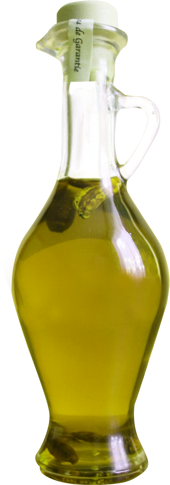
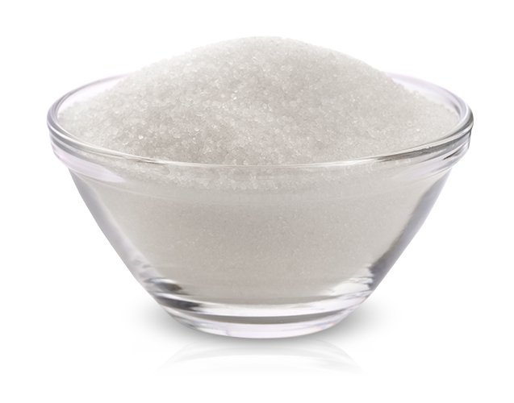
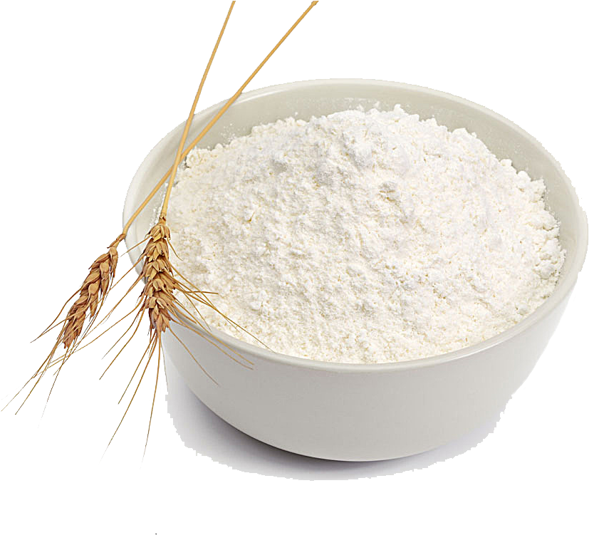
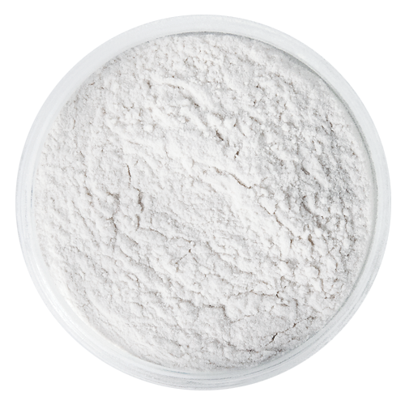
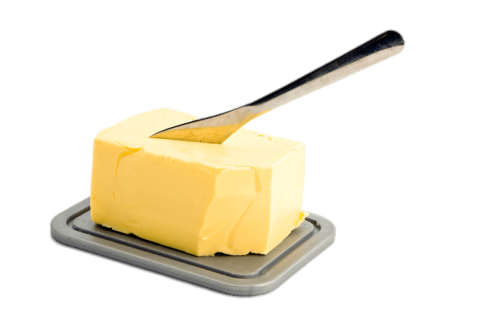
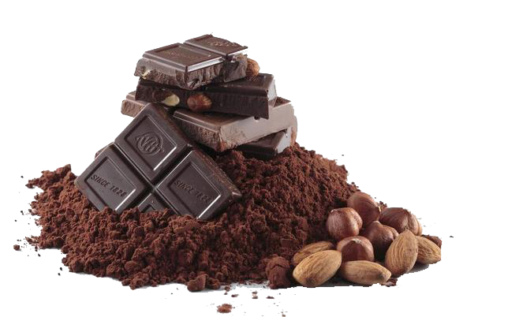

Bolo de cenoura com calda de chocolate
O bolo de cenoura com calda de chocolate é um verdadeiro ícone da culinária afetiva brasileira.
Diferente das versões americanas (que levam especiarias e nozes), o nosso foca na
simplicidade e no contraste de texturas.
Ingredientes:
Massa
-
4 ovos
-

1/2 xicaras (chá) de óleo
-
3 cenouras médias
-

2 xícaras de açucar
-

2 e 1/2 xícaras de farinha de trigo
-

1 colher (sopa) de fermento
Cobertura
-

1 colher (sopa) de manteiga
-
1 xícara (chá) de açucar
-

3 colheres (sopa) de chocolate em pó
-
1 xícara (chá) de leite
Modo de preparo:
Massa
- Em um liquidificador, adicione a cenoura, os ovos e o óleo, depois
misture tudo.
- Acrescente o açucar e bata novamente por 5 minutos.
- Em uma tigela ou na batedeira, adicione a farinha de trigo e depois
misture novamente
- Acrescente o fermento e misture lentamente com uma colher.
- unte a forma com manteiga e farinha de trigo.
- Despege a massa e leve ao forno pré aquecido a 180C por aproximadamente 40
minutos.
Cobertura
- Coloque em uma panela (com o fogo desligado) a manteiga, o chocolate em pó, açucar e o
leite, depois misture tudo.
- Leve a mistura ao fogo e continue mexendo até obter uma
consistência cremosa, depois despeje a calda por cima do bolo pronto.